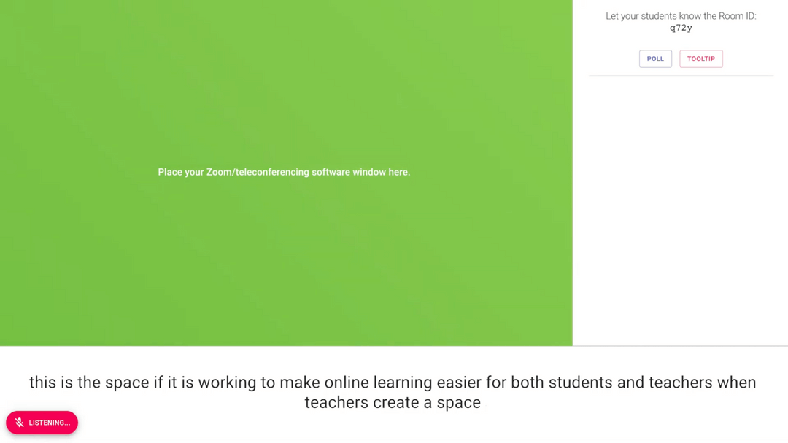
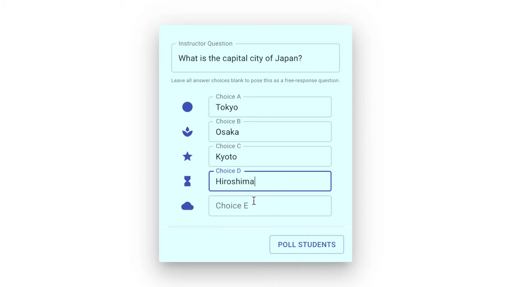
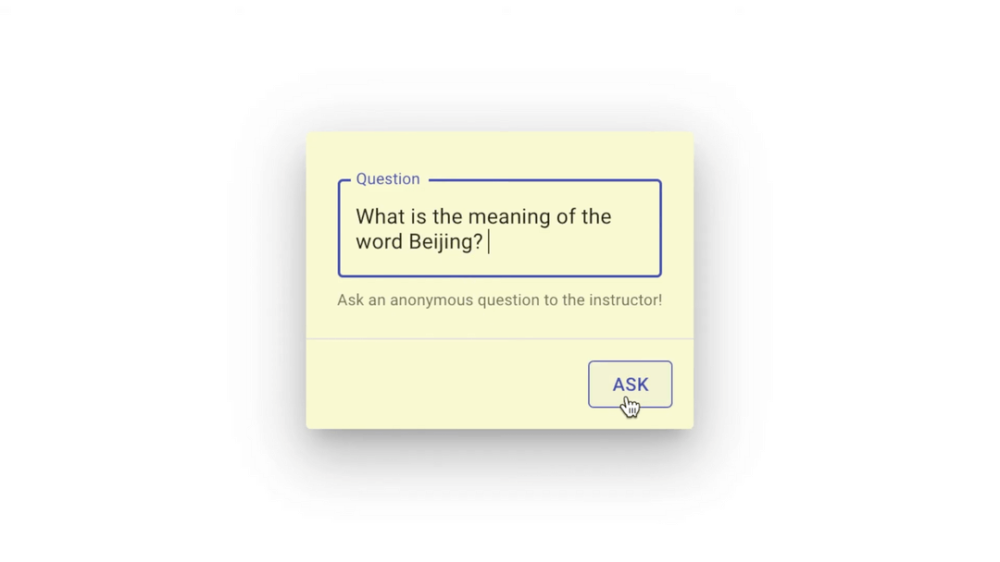
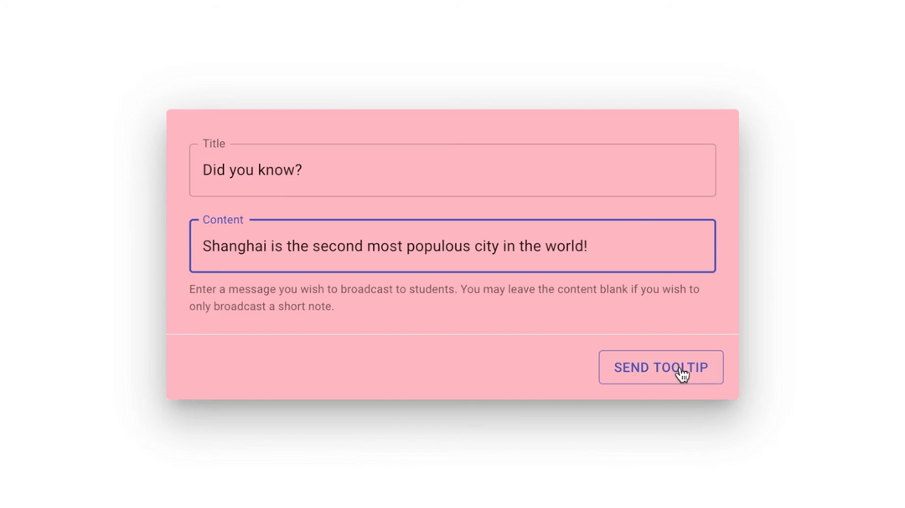
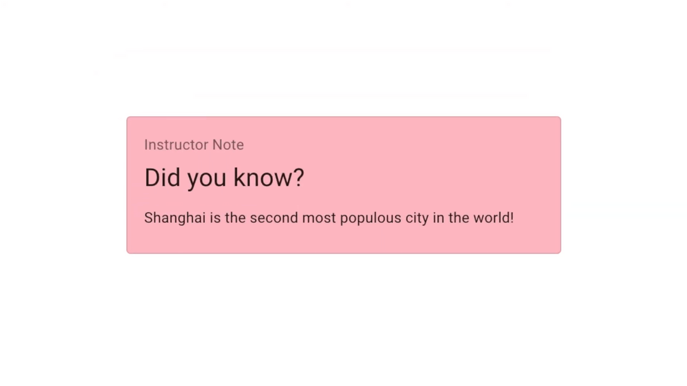

Pivot
Pivot was presented at Ivyhacks 2020, where it won Best Multiplayer Product.
Inspiration
Remote learning is becoming more and more prevalent in the wake of COVID-19, especially through Zoom. Unfortunately, many teachers have difficulty creating an interactive environment with Zoom: polling is frustrating to use, student questions get lost in the chat, and the “raise hand” feature disrupts the flow of lectures. In addition, a lot of students lack the powerful wifi connection required for Zoom, which means they might lose access to a lecture partway through.
What it does
With Pivot, teachers can create rooms for students to join during lectures. In these rooms, they can easily engage with students by creating multiple-choice and free-response polls and seeing student responses in real time. Teachers can also send quick notes or links as tooltips to help students follow along with the lecture. On the other hand, students can use Pivot to post anonymous questions, which can be marked as dismissed or answered as the lecture continues. Finally, Pivot creates a live transcript of the teacher’s lecture so that students can continue following along even if there is a problem with Zoom.
How we built it
We built Pivot’s framework using React with Next.js. Real-time communication within each room is powered by the Room Service API, and we used IBM Watson’s Speech-to-Text feature to produce a transcript.
Challenges we ran into
Our team members are spread across three timezones and two continents, so we had some difficulty coordinating with each other. As none of our team members have used React before, we also had some problems building the frontend. Finally, we ran into several challenges trying to set up IBM Watson Speech-to-Text in our web app.
Accomplishments that we’re proud of
We are proud that we were able to build a dynamic web application that integrates with Room Service and IBM services.
What we learned
We learned so much about web app development using React, Next.js, and APIs! We also developed stronger teamwork and communication skills to help us stay in touch despite working remotely.
What’s next for Pivot
We see a lot of potential for improvement in Pivot’s transcript feature! In the future, we plan to add MathJax API support to the transcript and text fields, as well as integrating keyword analysis of the transcript with the Wolfram Alpha and Wikipedia APIs so that Pivot can automatically send tooltips to review keywords. We also hope to use natural language processing on the transcript to automate generation of polling review questions.
Screenshots




